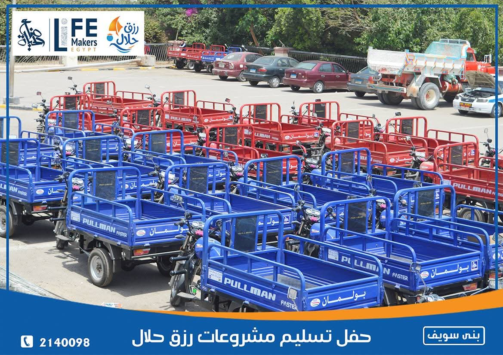
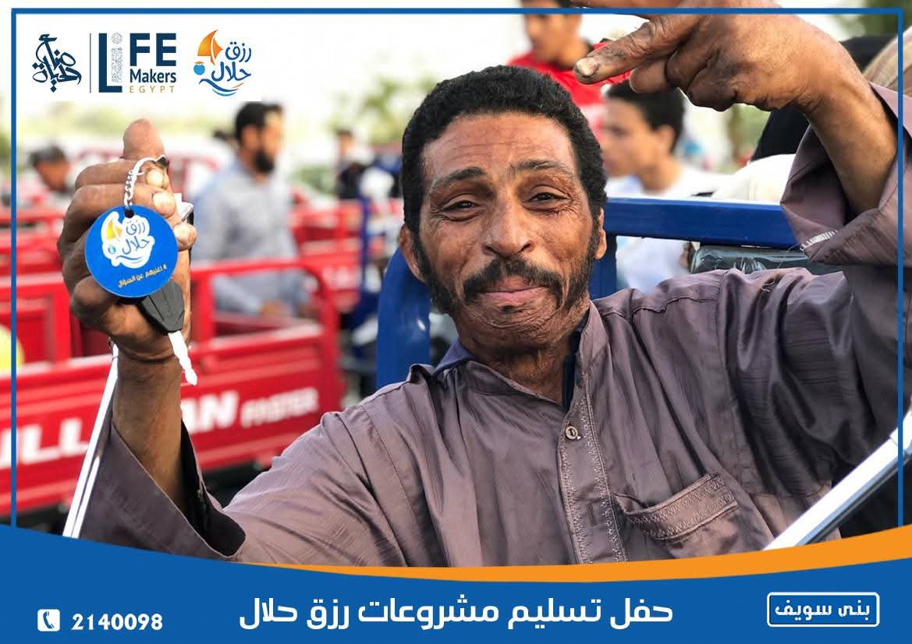
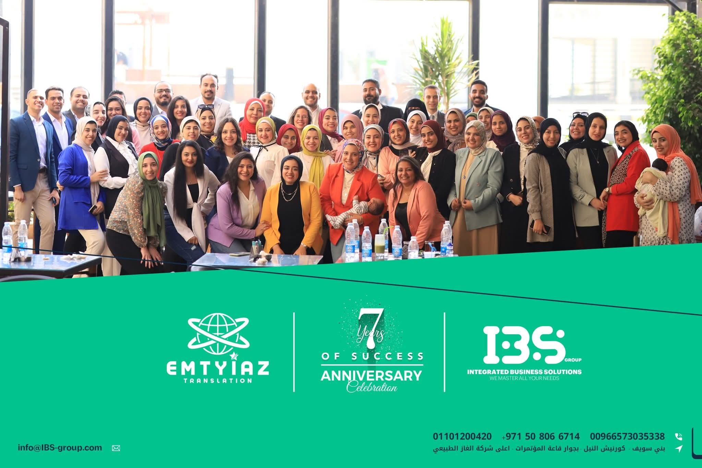
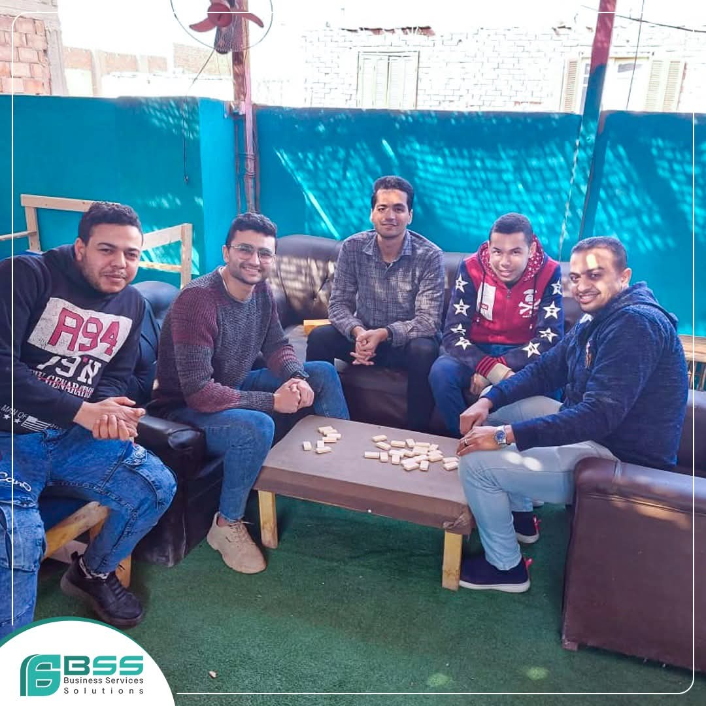
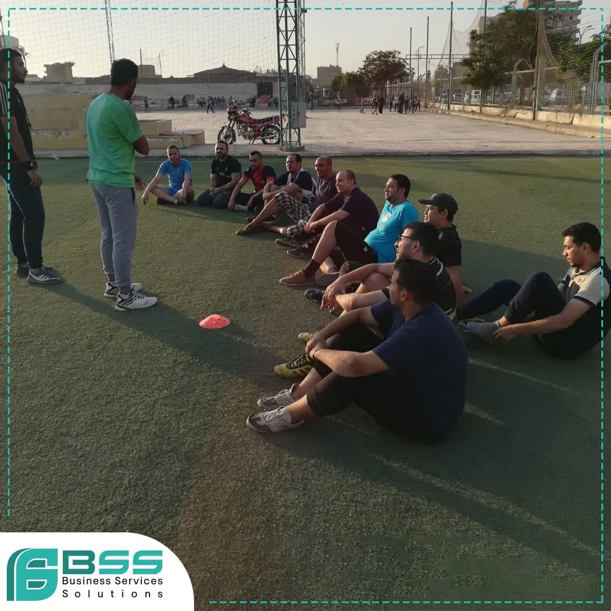
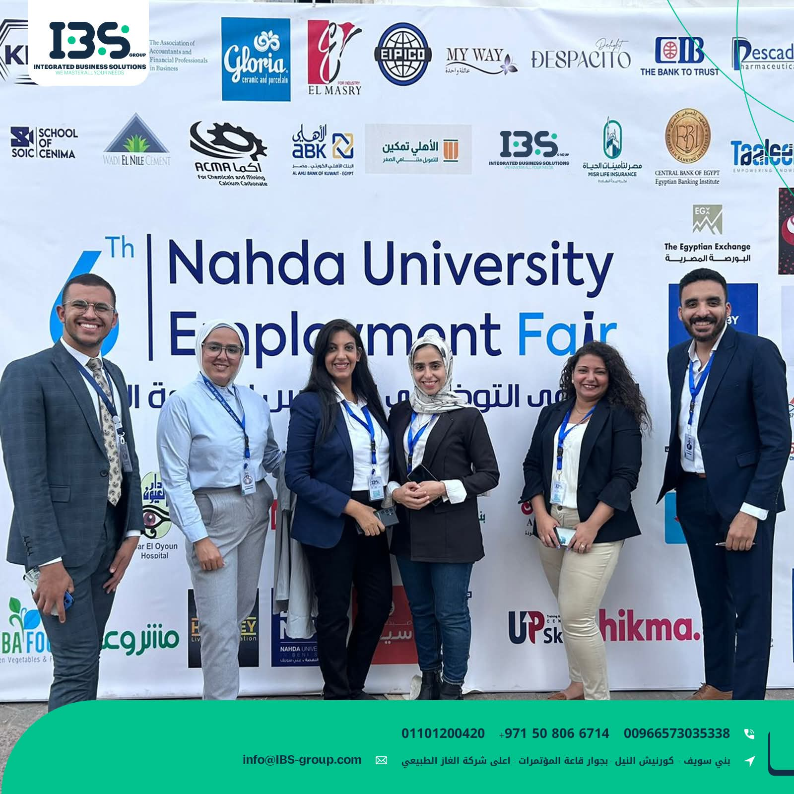
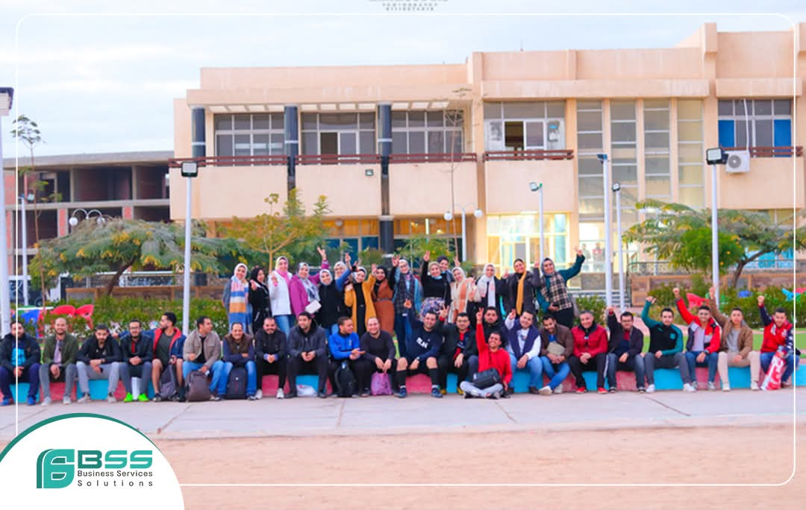

Project Coordinator · Renewable Energy · NGO
Mahmoud Abdalaziz
About
02
About Me
I'm Mahmoud, a Project Coordinator with 4+ years of experience in renewable energy, community development, and NGO operations. I'm the kind of person who thrives on variety: multi-tasking is not a skill I learned, it is how I'm wired.
I've worked across energy and sustainability projects, community development initiatives, and short-term events management. I only do work I believe in; when I care about what I'm doing, I give it everything, and that energy tends to be contagious across the whole team.
Always learning, always moving. Whether it is a new challenge, a new sector, or a new city, I'm in. I have delivered projects across 20+ governorates throughout Egypt, working with diverse teams and environments while maintaining consistent results.
What Drives Me
Impact-Driven
I only commit to work I genuinely believe in.
High Energy
My enthusiasm is contagious across the whole team.
Field-Tested
20+ governorates across Egypt, from Cairo to the Delta.
Always Growing
New challenge, new sector, new city? I'm in.
03
Statistics & Figures
0
Projects Delivered Across All Sectors
9M+ Budgets Managed
Based on objective delivery, stakeholder satisfaction and goal achievement across all projects.
Rizq Halal - Sustainable Livelihood Initiative
Beni Suef Branch · 2022-2023 · 7 Phases · 17 Volunteers
The Challenge
Selecting deserving families was straightforward. The real complexity was matching each family with a viable micro-project suited to their environment, skills, and capacity to generate sustainable income.
My Role - 7 Phases
- 2.5 months of field research and family interviews
- Project-family matching based on local market conditions
- Pre-delivery training and rehabilitation for beneficiaries
- Competitive procurement of equipment
- Delivery, documentation and financial reconciliation
- 3-month post-delivery follow-up
- Project closure
What We Delivered - 32 Micro-Projects
- 22 Tuk-tuk livelihood projects
- 3 motorcycle delivery businesses
- 3 grocery stores
- 2 poultry feed shops
- 1 household goods store for a widowed woman
- 1 printing and merchandise business for an orphaned youth
Impact
32 families in Beni Suef Governorate now have a sustainable source of income, coordinated by a team of 17 volunteers across 7 structured phases.



2 MWp Solar Station - Abu Qir Fertilizers Factory
Egyptian Solar Energy Co. · Arab Organization for Industrialization · 2025
The Challenge
A complex multi-stakeholder project with 4 parties requiring daily coordination. Difficult site conditions and absence of lifting equipment added further complexity.
My Role - Daily 10+ Hours
- Managed 3 engineers, 40 technicians and workers, and 3 specialized drivers
- Issued daily work orders inside the factory
- Monitored execution progress and quality control
- Sent daily reports to all 4 stakeholder parties
- Resolved site issues immediately as they arose
The Critical Decision
After one month, delivery indicators were negative, compounded by Eid Al-Adha. I issued an emergency action plan with increased workforce and extended working hours.
Results
- Delivered within 2 months of site handover
- Delay penalties fully avoided through documentation
- Additional works invoice submitted for out-of-scope items
Impact
Project closed with zero losses and 2 MWp installed at Abu Qir Industrial Complex, Alexandria.


Employee Wellbeing & Engagement Program
2 Companies · 2021-2024 · 280 Employees · 2+ Years
The Challenge
Routine and monotony are among the biggest drivers of low productivity and weak employee loyalty, yet most companies do not truly understand what their employees need.
My Role
- Designed and ran regular employee satisfaction surveys
- Collected continuous feedback to understand team needs
- Planned and executed weekly events to break routine
- Linked survey results directly to event design for real impact
Results
- 12 large corporate events plus weekly events over 2.5 years
- 93% post-event satisfaction rate
- 280 employees served across 2 companies
- Measurable improvement in workplace energy and culture
Impact
Sustained improvement in employee engagement, loyalty, and productivity across 2 organizations over a 2+ year period.







Contact · 07